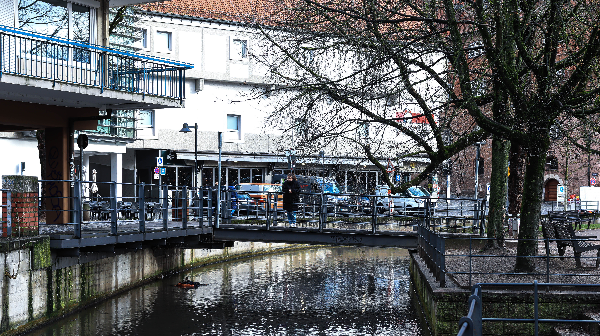
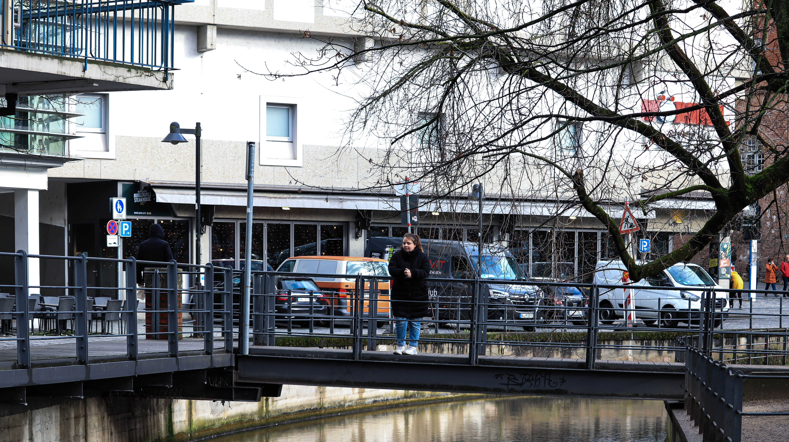
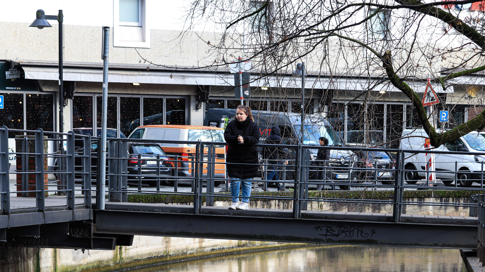
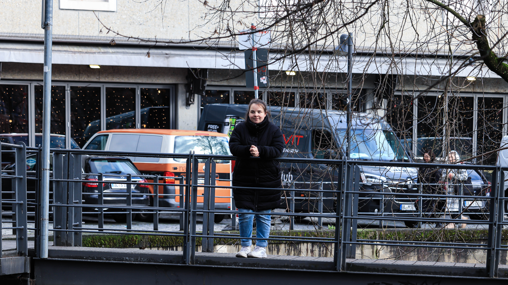
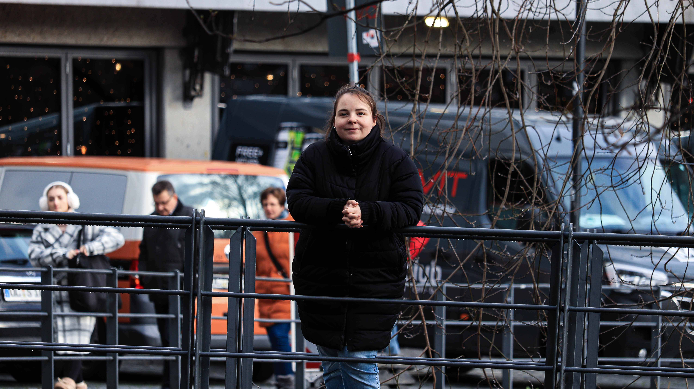

Grundlagen Tutorial






2 / 4
Brennweite
Die Brennweite beschreibt den Abstand zwischen dem Brennpunkt und dem Sensor.
Das bedeutet, dass die Brennweite die Größe des Bildausschnitts bestimmt.
Je größer die Brennweite ist, desto kleiner ist der Bildausschnitt.
Die Brennweite wird in Millimeter angegeben.(18-35mm, 50mm-, 150mm etc.)
Es gibt Festbrennweiten und Zoomobjektive.
Festbrennweiten haben oftmals eine bessere Qualität, da sie weniger bewegliche Teile haben.
Außerdem bieten sie eine bessere Lichtstärke, durch eine offenere Blende
Die Brennweite ist ein wichtiger Faktor für die Bildgestaltung.